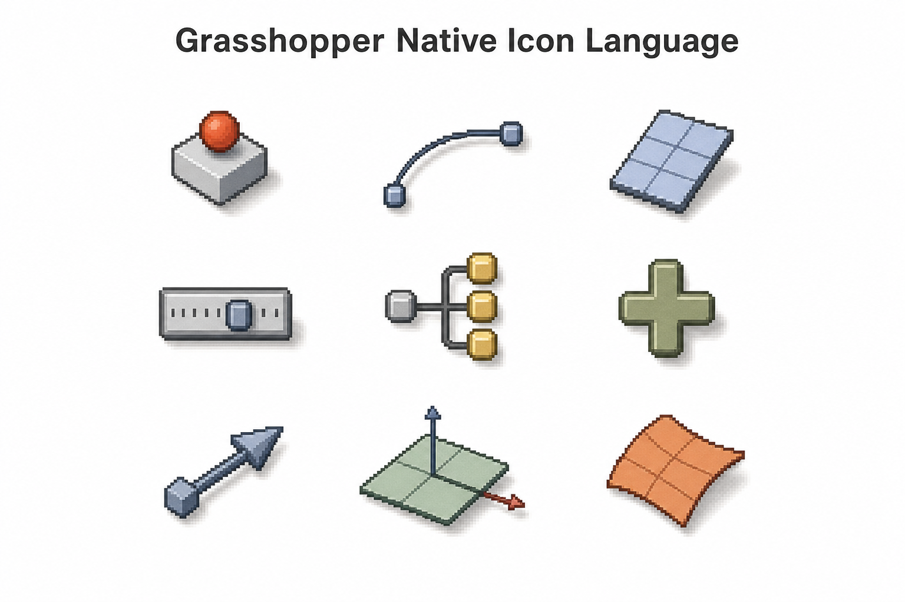
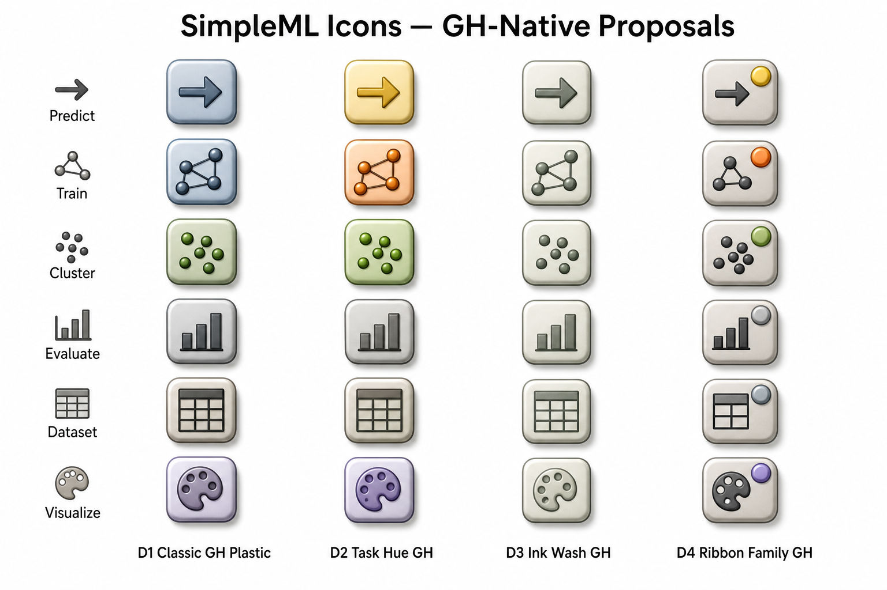

Classic GH Plastic
最接近原生 Params 风格：灰蓝/橄榄软体积 + GH 阴影。不靠高饱和也能在深色工具栏上认出来。
- 和软件气质最一致
- 长期耐看，教学/发布都稳
- 任务类型靠图形，不靠大色块
上一版 A/B/C（线描 App 风 / Material 色块）和 Grasshopper 工具栏不搭。 下面先给出 官方级设计规范（David Rutten / McNeel），再给你 4 套更贴近 GH 的新方案 D1–D4。
| 尺寸 | 24 × 24 px（SDK：GH_Component.Icon） |
|---|---|
| 格式 | PNG · RGBA · 透明底 |
| 内容区 | 只用中间 20 × 20，四周留 2 px 给阴影 |
| 阴影 | Blur 2px · 右下偏移 1px · 黑色约 25% 透明 |
| 描边 | 只画外轮廓；描边用同色相更深，少用纯黑 |
| 文字 | 尽量不要写 Pred / VizR 这类缩写 |
| 颜色 | 每个图标（或同一族）控制在 1 个色系 |
| 对比 | 避免黑白高反差；软体积 + 柔和抗锯齿更像 GH |
docs/ICON_SPEC_GH_NATIVE.md。
放大显示（pixelated）。注意：透明底、软体积、低饱和、右下轻阴影——这才是 GH 工具栏气质。

上图：GH 原生图标语言 mood（软塑料体积 / 灰蓝橄榄色系 / 轻阴影）。

上图：四套 GH 原生向方案总览。下面可点选。
最接近原生 Params 风格：灰蓝/橄榄软体积 + GH 阴影。不靠高饱和也能在深色工具栏上认出来。
同一套 GH 塑料语言，但用低饱和黄/橙/绿区分分类·回归·聚类；工具仍灰蓝。
近乎单色：灰绿水墨填充，强调剪影。更克制，适合希望“几乎像官方组件”的外观。
共用软灰底座外形，只在角上放小任务色标。家族感强，又不完全依赖大色块。